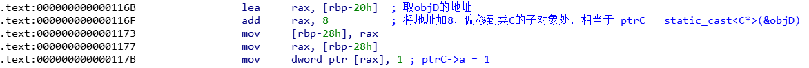

深入理解对象内存模型（二）
前言
虚继承是 C++ 类继承体系中的一个重要特性，实现该特性也用了比较复杂的设计，下文通过菱形继承，带虚函数和虚基类的菱形继承，带虚基类的菱形继承来继续分析内存模型。
实验环境：
- Ubuntu 21.04
- g++ 10.3.0
- IDA 7.5.0
- [注] 以下程序都是 64 位
菱形继承
1 | class A { |
如上图所示，在菱形继承中，class D 中会有两个 class A 的子对象，因为 class B 和 class C 都继承了 class A，所以在第 23 行中的代码，在编译的时候会报错，因为这种操作是 ambiguous 的，编译器不知道你指的是 class D 对象中的哪个 a。
在第 25 行代码中，用 class C 的指针指向 class D 的对象，其行为和多继承几乎一模一样，因为 class C 是 class D 的第二个父基类，所以需要先对 this 指针进行修正，使得其指向 class C 的子对象所在地址。反映在汇编上，就是对 class D 的 this 指针向高地址方向偏移 8 位，如下图所示。

带虚函数和虚基类的菱形继承
1 | class A { |
如下图所示，在虚继承中，情况就复杂的多了，因为虚继承要保证在对象中只有一个虚基类的实例，所以不能再像上述菱形继承那样来构造内存空间了，那么虚基类 A 的子对象应该放在 class D 对象的什么位置呢？在我们所使用的 GCC 编译器中，采用了如下图所示的内存构造，即将虚基类的子对象放在了整个内存对象的最下面。这又引起了一个问题，如何通过子类的指针访问到虚基类的成员呢？我想你已经注意到了在 class D 的虚表中有了一个新的项 —— offset vbase，这个表项就是记录在 class D 的对象中各个子对象的 this 指针到虚基类的子对象的偏移。如 class D 的子对象 B，到虚基类 A 的子对象的偏移为 32 个字节；而 class D 的子对象 C，到虚基类 A 的子对象的偏移为 16 个字节；而 class D 的子对象 A，到其自身子对象的偏移为 0 个字节。
我们可以通过解析上述第 28 行代码来探索这个 offset vbase 字段的作用。由于 funcA 是一个虚函数，且其第一次定义在 class A 中，所以通过 ptrD 来调用这个函数的时候，要通过虚表来找到其函数指针，而 funcA 的函数指针保存在 class D 虚表的 class A 子项里面，所以，该行调用首先要通过 offset vbase 将 ptrD 偏移到 class A 的子对象处，即 vptrA 所在的地址，然后才能找到 funcA 的函数指针。通过下图汇编代码所示，可以观察到编译器处理的过程是用到了 offset vbase 的。
带虚基类的菱形继承
1 | class A { |
上块代码中的类继承体系中，class A 是一个虚基类，但是没有任何的虚函数，然而在生成的内存模型中，发现 class D 居然有虚表，如下图 所示，这是为什么呢？这是和上述所说的保存一个虚基类实例的方法同理的，为了在动态的情况下定位到虚基类 A 的子对象，必须把偏移量记录下来，然后保存在虚表中。比如在第 24 行代码中，就会利用 offset vbase 来修正 this 指针，使其可以访问到虚基类 A 的子对象。
理解带虚基类的对象构造过程
我们通过第 2 小节中带虚函数和虚基类的菱形继承体系来理解这个过程，在创建一个 class D 的对象时，会调用 D 的构造函数，而 D 的构造函数又会依次调用 A，B，C 的构造函数，我们逐步分析。
第一步肯定是调用 A 的构造函数，初始化子对象 A 的内存空间，这个过程很简单，令 vptrA 指向 class A 的虚表即可。调用 class A 的构造函数后 objD 对象的内存模型如下图所示。
第二步将调用 B 的构造函数，但是 B 的构造函数并不是简单的令 B 的子对象中的 vptrB 指向了 B 的虚表，而是使得 vptrB 指向了一个称为 B-IN-D 虚表，同时调整了 vptrA 指针，指向 B-IN-D 虚表中的 A 子项，如下图所示。这里就有问题出来了，为什么 B 的构造函数就知道要让 vptrB 指向 B-IN-D 这个虚表呢？这个虚表是哪里来的呢？其实对于继承了类 B 的其他类 X，编译器都会为其生成 B-IN-X 这种虚表，在类 X 调用 B 的构造函数时，除了传入 this 指针，还会传入一个指向 B-IN-X 虚表的指针，而这种指针都保存在了类 X 的 virtual table table（VTT） 中（同样在编译时生成），然后 B 的构造函数会通过这个指针初始化 B 的虚表指针，同时调整虚基类 A 的虚表指针。
第三步将调用 C 的构造函数，有了第二步的铺垫，第三步自然就简单多了，其原理和第二步完全一样。通过传入 C 的构造函数 this 指针和 C-IN-D 虚表指针来对类 C 的子对象进行初始化，初始化的结果如下图所示。
第四步就是回到 D 的构造函数，重新为 class D 中的各个 vptr 赋值，使其指向 D 的虚表中的指定位置。最后在 D 的构造函数运行完成后，得到 D 的对象的内存模型如第三节中所示。
对于 D 的 VTT 的结构，其中保存了一系列的虚表指针，这些指针指向 B-IN-D 虚表， C-IN-D 虚表，D 虚表的指定位置，用于协助类 B、C、D 来执行构造函数。如下图所示。
C++ 中对象的内存模型是十分复杂的，但是归根结底无非就是用到了虚表（vtable），虚表指针（vptr），虚表表（VTT），this 指针修正这几种技术，上述对内存模型的探索都涵盖到了这几个概念，对于不同的类继承体系，用上述几种技术都可以实现其内存构造~